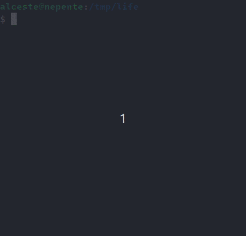

Module 13, Part 2: Exam Q&A, Review, and Final Lab#
This module does not introduce new contents: instead, the lecture will provide a brief overview of the upcoming final exam, with time for questions and discussion. Then, there will be the final lab, and you can work on the following assessments.
Important
For each assessment, you can download the corresponding handout and submit your solution on DTU Autolab: https://autolab.compute.dtu.dk/courses/02312-E24.
For details on how to use Autolab and the assessment handouts, and how to submit your solutions, please read these instructions.
If you have troubles, you can get help from the teacher and TAs.
01 - Game of Life#
The goal of this assessment is to implement a version of John Horton Conway’s Game of Life. BONUS: if you solve this assessment, you can experiment with the Game of Life animations described below!
The game takes place in a finite grid of cells arranged in rows and columns. Each cell can be either alive or dead. The game simulates the evolution of the grid in steps: at every step, the current grid of cells is analysed to compute the next state of the grid. More specifically, the next state of each cell (dead or alive) depends on its current state and the state of its 8 neighbouring cells (horizontally, vertically, and diagonally), according to the following 4 rules:
if a cell is currently alive and has less than two live neighbours, then the cell dies (“underpopulation”);
if a cell is currently alive and has two or three live neighbours, then the cell remains alive;
if a cell is currently alive and has more than three live neighbours, then the cell dies (“overpopulation”);
if a cell is currently dead and has exactly three live neighbours, then the cell becomes alive (“reproduction”).
For example, consider the following patterns of cells (where live cells are black, and dead cells are white).
The cell pattern above (called “Tub”) remains constant at each step of the game, because:
each live cell has exactly two live neighbours (so it remains alive), and
each dead cell has less than three live neighbours (so it remains dead).

The cell pattern above (called “Blinker”) evolves by alternating between the horizontal 3-cell pattern at one step, and the vertical 3-cell pattern at the next step. This happens because, at each step:
the live cell in the centre stays alive, since it has two live neighbours;
the two live cells at the extremities of the pattern die, since each one of them only has one live neighbour;
the two dead cells closest to the centre of the pattern become alive, since they have three live neighbours;
all the other dead cells remain dead, because they have less than three live neighbours.
(You can find more interesting patterns and references in the Conway’s Game of Life page on Wikipedia.)
Your task is to edit the file Life.java provided in the handout, and implement
a class called Life with the following requirements. (Besides, feel free to
define additional private fields and method of the class Life however you
like.)
The class
Lifemust provide the constructor:public Life(int rows, int columns)
which creates a new game of life with a grid of cells having the given number of
rowsandcolumns. Each cell in the new grid must be dead.The class
Lifemust provide the method:public void setCell(int row, int col, boolean alive)
which sets the cell at the given
rowandcolumn as alive or dead, depending on whether the argumentaliveis true or false. You can assume that the givenrowandcolumn are within the boundaries of the grid.The class
Lifemust provide the method:public void display()
which prints on screen the current grid, showing each dead cell as
.(dot) and each live cell as#. For example, the “Blinker” pattern above in a 5 \(\times\) 5 grid may look like:..... ..... .###. ..... .....
The class
Lifemust provide the method:public void step()
which updates
thisobject by evolving the grid of cells to their next state, according to the 4 rules discussed above. For instance, iflifeis an object of typeLifeandlife.display()prints the “Blinker” pattern above, then callinglife.next()followed bylife.display()should produce the output:..... ..#.. ..#.. ..#.. .....
Note
Every cell in the grid has 8 neighbours — except:
each cell located at a corner of the grid only has 3 neighbours;
each cell located along a border of the grid (but not in a corner) has 5 neighbours.
Hint
Keep in mind that, when the method
step()computes the next state of the grid of cells, it needs to analyse the state of each cell in the current grid. This means that you should not change the current grid before the next grid has been computed. When the next grid is fully computed, then it can replace the current grid…
The handout includes some Java files called Test01.java, Test02.java, …
and also TestTub.java, TestGlider.java, TestPentomino.java: they are test
programs that use the code you should write in Life.java, and they might not
compile or work correctly until you complete your work. You should read those
test programs, try to run them, and also run ./grade to see their expected
outputs — but you must not modify those files.
When you are done, submit the modified file Life.java on DTU Autolab.
Tip
Each one of the test programs in the handout can also show an animation of the
game of life based on your implementation of the class Life. To see the
animations, you will need to open a terminal in the directory of the handout and
compile all Java files:
javac *.java
Then you can execute each one of the test programs by providing the command-line
argument animate, e.g.:
java TestPentomino animate 10
where 10 is the number of steps per second (you can try different numbers). The animation should look as follows:
To terminate the program, press Ctrl+C.
Note
For Windows users: if the animation is not displayed correctly, make sure that the console program you are using is Git Bash (as recommended) or Powershell.
Warning
The automatic grading on DTU Autolab includes some additional secret checks that test your submission with various cell patterns. After you submit, double-check your grading result on DTU Autolab: if the secret checks fail, then your solution is not correct, and you should fix it and resubmit.
02 - DTU Christmas Party Management with File I/O#
Important
For this assessment you must submit two files: Person.java and
FileUtils.java. For the submission instructions, see the
note at the end of this assessment.
The goal of this assessment is to improve the DTU Christmas party management software in Example 60, adding the capability of loading and saving lists of people (employees and guests) from/to a file in CSV format.
The contents of a CSV file with a few employees and guests should look as follows:
Name,Type,Department,Ticket
Laura Lund,guest,,123
Alceste Scalas,employee,DTU Compute,
Oliver Olesen,employee,DTU Construct,
Emma Ebbesen,guest,,75
Ida Iversen,employee,DTU Aqua,
The first row contains the column headers, while each one of the remaining rows
represents a person at the party; each row contains 4 fields (possibly empty)
separated by a comma ,.
If the rows above are saved in a file called e.g. people.csv, it is possible
to open the file with a spreadsheet program like LibreOffice
Calc or Microsoft
Excel, and its contents
would look as follows:
Name |
Type |
Department |
Ticket |
|---|---|---|---|
Laura Lund |
guest |
123 |
|
Alceste Scalas |
employee |
DTU Compute |
|
Oliver Olesen |
employee |
DTU Construct |
|
Emma Ebbesen |
guest |
75 |
|
Ida Iversen |
employee |
DTU Aqua |
Observe that:
when the “Type” of the row is “employee”, then the “Ticket” is empty;
when the “Type” of the row is “guest”, then the “Department” is empty.
Your task is to implement the CSV load and save functionality, in two steps:
Step 1 - Loading from CSV File#
Edit the class FileUtils in the file FileUtils.java and implement the
following static method:
public static Person[] load(String fname) throws java.io.IOException
This static method must read a CSV file (called fname) with the format
outlined above, and return a list of corresponding objects — which may be
either of the class Employee or Guest (hence such objects can be contained
in an array of Persons). You can assume that the file respects the CSV format
described above.
Hint
The class
FileUtilsprovided in the handout contains aprivatestatic method calledcountFileLines(fname)that returns the number of lines contained in the file calledfname(or throws anIOExceptionif the file cannot be opened). This can be useful to determine the size of the array that needs to be created by the static methodFileUtils.readFile(...)…Remember that you need to skip the first line of the CSV file, since it contains the column headers.
To extract the values from a line read from the CSV file, you might split a string around the separator
",". For more details, see Example 35…To convert the content of a
Stringobject into aninteger value, you can use the static methodInteger.parseInt(...). For instance,Integer.parseInt("42")returns theintvalue 42. This can be useful to convert a string read from a CSV file into the ticket number (of typeint) required by the constructor of the classGuest.
Step 2 - Saving to CSV File#
First, you need to edit the file Person.java and add the following abstract
method to the class Person:
public abstract String toCSV()
The method must return a CSV line describing this object. You will need to
implement the method for both classes Employee and Guest, according to the
CSV specification discussed above.
Then, you need to edit the class FileUtils in the file FileUtils.java and
implement the following static method:
public static void save(Person[] people, String fname) throws java.io.IOException
This static method must save the given array of people in the CSV file called
fname, according to the CSV format described above. If the file already
exists, this static method must overwrite it.
Hint
Do not forget to add the headers at the beginning of the CSV file.
To turn each element of the array
peopleinto a line in the CSV file, you can call the method.toCSV()implemented above.
Note
For this assessment you need to prepare and submit a ZIP file containing your
modified versions of Person.java and FileUtils.java. To prepare that ZIP
file, you can simply execute from the terminal (inside the handout directory):
./grade -z
This command will grade your work and prepare a ZIP file that you can then submit on DTU Autolab.
Warning
The automatic grading on DTU Autolab includes some additional secret checks that test your submission by loading and saving various lists of people. After you submit, double-check your grading result on DTU Autolab: if the secret checks fail, then your solution is not correct, and you should fix it and resubmit.
03 - Arithmetic Expressions, Version 4#
This is a follow-up to the assessment 03 - Arithmetic Expressions, Version 3,
and the starting point is its solution, i.e. the file Expression.java (you can
use either your own file, or the one provided by the teacher as a solution to
03 - Arithmetic Expressions, Version 3).
Your task is to improve the solution to
03 - Arithmetic Expressions, Version 3 by adding support for variables
that can be substituted with other expressions. After this task is completed,
it should become possible to represent an expression 1 + x as follows:
var e = new Addition(new Constant(1.0), new Variable("x"));
Then, calling e.result() should cause an error, because the value of the
variable x is undefined. However, we should be able to create a new
expression from e where the variable x is substituted with the constant
expression 5.0, as follows:
var e2 = e.substitute("x", new Constant(5.0));
and now, e2 should correspond to the expression 1.0 + 5.0, and calling
e2.result() should return 6.0. Meanwhile, the original expression e remains
unchanged.
To achieve this, your task is to extend the solution to 03 - Arithmetic Expressions, Version 3 as follows.
The interface
Expressionmust include the following new method:public Expression substitute(String varName, Expression eSubst);
The idea is that calling this method returns an expression that is identical to
this, except that any occurrence of the variablevarNameis substituted with the expressioneSubst.You need to implement a new class called
Variablewith a constructorVariable(name), wherenameis aStringrepresenting the name of the variable. Then, if we define e.g.:var expr = new Variable("x");
then the object
exprmust behave as follows:expr.format()must return the variable namex;expr.result()must throw anArithmeticExceptioncarrying the error messageUndefined variable: xexpr.substitute(varName, eSubst)must work as follows:if
varNameis equal to the variable name ofexpr(i.e."x"), then the method must return the expressioneSubst;otherwise, the method must return the expression
expras it is.
You also need to implement the method
substitute(varName, eSubst)for all the other classes that implement the interfaceExpression. So, ifexpris an object of typeExpression,expr.substitute(varName, eSubst)must work as follows:if
expris aConstant, the method must returnexpritself (because there are no variables to substitute inside a constant);if
expris anAdditionbetween two expressionse1ande2, then the method must create and return a new object of typeAdditionconstructed with the expressions obtained by substitutingvarNamewitheSubstin bothe1ande2;if
expris aSubtractionorDivisionorMultiplication, the behaviour of the method is similar;if
expris aMinusof an expressione, then the method must create and return a new object of typeMinusconstructed with the expression obtained by substitutingvarNamewitheSubstine;if
expris anAbsoluteValueorSquareRoot, the behaviour of the method is similar;
After your modifications, the classes in Expression.java must match the UML
diagram in Fig. 34 below —
where the differences with 03 - Arithmetic Expressions, Version 3 are the
new method substitute(...) in the interface Expression, and the new class
Variable.
Fig. 34 UML class diagram for 03 - Arithmetic Expressions, Version 4.#
When you are done, submit the modified file Expression.java on DTU Autolab.
The handout includes some Java files called Test01.java, Test02.java, etc.:
they are test programs that use the code you should write in Expression.java,
and they might not compile or work correctly until you complete your work. You
should read those test programs, try to run them, and also run ./grade to see
their expected outputs — but you must not modify those files.
Warning
The automatic grading on DTU Autolab includes some additional secret checks that test your submission with more expressions. After you submit, double-check your grading result on DTU Autolab: if the secret checks fail, then your solution is not correct, and you should fix it and resubmit.
04 - Video Game Monsters, Part 6#
Important
For this assessment you must submit two files: Monster.java and
GameUtils.java. For the submission instructions, see the
note at the end of this assessment.
This is a follow-up to the assessment
04 - Video Game Monsters, Part 5, and the starting point is its
solution, i.e. the files Monster.java and GameUtils.java (you can use either
your own files, or the ones provided by the teacher as a solution to
04 - Video Game Monsters, Part 5).
The development of the video game has a new requirement: the player must be able to cast and remove a curse on all the monsters (dead or alive) in the game, all at the same time. When a monster is cursed, the damage it takes when hit or burnt is multiplied by 3, after applying the monster’s damage factors.
For example, suppose that a monster called Slimer has burning damage factor 0.5 (i.e. it takes half the damage when burnt); also suppose that the player burns Slimer, applying 10 points of burning damage:
when the curse is not active, Slimer takes 10 \(\times\) 0.5 = 5 points of burning damage, as usual;
when the curse is active, Slimer takes 3 times that amount of damage — i.e. Slimer takes 10 \(\times\) 0.5 \(\times\) 3 = 15 points of burning damage.
Your task is to add support for the curse feature to the class Monster, and to
the static method GameUtils.playGame(), as follows.
The class
Monstermust support two new static methods:public static void curseAll() public static void uncurseAll()
These two static methods activate and deactivate the curse, respectively. The curse is initially not active. When the curse is active, if
mis an object of the classMonster, then the behaviour of some methods changes as follows:the method
m.getDescription()must report that the monster is cursed — so, the returned string might look like:Brainy (CURSED Mindflayer; health: 300)
the methods
m.hit(...)andm.burn(...)must triple their damage, as described above;the method
m.getSymbol()must return the lowercase initial character of the monster’s species (instead of the uppercase initial character).
The method
GameUtils.playGame()must support two new commands, which may be written by the user who plays the game:curse- this command causesplayGame(....)to activate the curse (by callingMonster.curseAll()) and then continue the game loop;uncurse- this command causesplayGame(....)to deactivate the curse (by callingMonster.uncurseAll()) and then continue the game loop.
Note
For this assessment you need to prepare and submit a ZIP file containing your
modified versions of Monster.java and GameUtils.java. To prepare that ZIP
file, you can simply execute from the terminal (inside the handout directory):
./grade -z
This command will grade your work and prepare a ZIP file that you can then submit on DTU Autolab.
Hint
To store the activation status of the curse, you could add a private static
field of the class Monster…